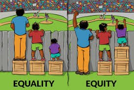
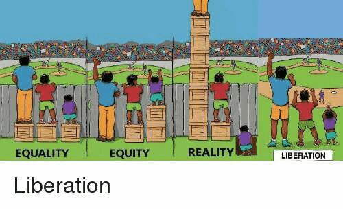

20:00 or 21:00? You seem to have proposed both.
21:00 because of a timezone change of 1 participant, would be happy if you join.
1 Like
Can you make an agenda? It’s always easier to have a meeting with an agenda, so that participants can prepare better and know what to expect…
See above and probably still the Conformance Section in the Specs.
From what I read here in the forum it seems to be fashionable to be exclusive and “reach out to a few before launch” 
hey there,
Thx @how for pulling me up here, I am trying to understand what is happening.
I see that you want to discuss community values and technical issues but Its really not clear what this meeting is about. I also would need an agenda (especially that i have to cancel a nice plan on the 4th in order to attend).
I went through @bhaugen article about mutual coordination economy on P2P foundation; it made me enter a not enough known world of globalized production tracking; discovering the idea of ecosystem coordination via signals. Many questions come to mind such as what sensors for what, for whom, where do they come from. Social issues, privacy issues, equity issues. production issues. control issues etc… etc… etc… Also there is a lot of knowledge that is rare and welcome in the commons economy.
I believe those questions are not the topic of this meeting.
I understand maybe the topic of this meeting is to coordinate existing projects that deal with data and information among them community mapping projects, is this about right?
Starting from there can we list participating projects, and what they do this will maybe help define an agenda.
Maybe I can start by bringing IN COMMON 
IN COMMON proposes a model and an API where civil society and solidary economy actors can share, view, and map their data. IN COMMON is also a community whose members meet regularly.
I don’t know for sure, but the conversation about the meeting has become a little fragmented.
I don’t think that P2P Foundation article is very relevant, though.
@Sebastian suggested a meeting after I posted this set of links in this other thread:
It was mostly about Bonfire and community economic systems as described in A fractal economy — Economic Networks , where mapping can be part of the picture but economic provisioning is more central, and that is my focus.
Sebastian can explain his interest, but I see a lot of intersections between that Bonfire project and his https://redaktor.me/ project, which is a lot more focused on maps.
He also said he wants it to be an open meeting so you should feel welcome to attend and bring in IN COMMON.
I agree however it would be great if one of you described those intersections it would help formulate an agenda for the meeting.
Would love to but please clarify what is the intention.
Thanks for the link about fractal economic networks I find it quite abstract, and I wonder how it addresses basic needs of peasants, that deploy over time and generations engaging with the variety of systems of rules and regulations of the country they live in. Maybe better described here: Comment une petite société coopérative tente de changer radicalement le monde paysan - Basta !
I’ll wait for @Sebastian to clarify intention and agenda. He called the meeting. I’m just responding to you about stuff I wrote and know something about.
That particular blog post is about Solawis, which are solidarity agriculture associations, in the examples and articles cited there, in Germany, and how they are expanding into cooperative community economies. Solawis are not abstract, they are living organizations, altho the fractal stuff is abstract. Sorry about that.
I doubt that it addresses many of the needs you mentioned, but thanks for the link, I’ll study the very interesting article and see if it might have any bits of relevance.
I’ll describe the intersections I see, but don’t know if it helps with an agenda.
People post offers and needs in Redaktor, and they can also do the same in Bonfire. Both of them use the Activity Pub protocol in one way or another, altho I am not sure how Redaktor uses it. Bonfire would love some maps and doesn’t have any so far. Probly more intersections that I don’t see yet.
1 Like
I would appreciate an agenda as well since I’m supposed to be on the road that day.
Also, I find a meeting without an agenda quite useless.
From the redaktor point of view my assumption is that the ideas in valueflows matches the ideas in redaktor for journalist use cases and grassroots journalism.
While the client work is in progress and widgets are done for all the Actor types (to view or edit them as row, card and page) it came to the Object types and e. g. Article or Event or Page can be produced by multiple Actors.
To create a fair ecosystem in redaktor let us take the pie story and replace the Agents by Actors like a photographer, an editor and two translators and the economic resource is a share of the Article and when readers decide to pay something the money can be shared.
This is what I wanted to learn about on the one hand.
And on the other hand if the work on the client needs to respect that for e.g. the Object-widgets/webcomponents I am working on now it can be usable for Bonfire …
1 Like
Yes and one of the issue about this is: there are as many view as what producers, only in mapping we have as many views as there are participants even on a simple issue as: where is geographically situated this resource? One important thing we do is propose different views in IN COMMON model depending on the agents.
I have hard time to imagine how a resource scheme can take in account all the different specificity of a production process and work through the different costs and benefices according to real life situations such as power relations and the broad scope of regulatory frameworks, money values, human capacity to understand and valorize the effective amount of work brought into a project (for example experience or relational network, or access to state support such as grants or unemployment money, or family support etc… etc… etc…).
Guts feeling is that governance conversation are crucial in this process and also community based decision making.
In that case the different views might amount to different preliminary agreements among the community and the question becomes if we are talking about many individual across different countries then decisions need to be very well informed about the different situations which is really not easy to achieve.

I know we are working towards liberation, but there is a long way to go.

Those are my 2cts I would be interested to continue the conversation, as we (petites singularités) are very interested to continue discussing issues of community based data management organization for which purpose we are also currently engaged in DREAM even more then in the context of THX, where we join to bring together STS thinking and free software developer’s knowledge.
I am sorry not to be ale to join on Thursday however for further meeting I could also contribute some thoughts about the idea of classification and classifying the world mainly via 2 chapters I would gladly propose people to read
Anna Lowenhaupt Tsing
Friction: An Ethnography of Global Connection**
Particularly 5 p171 titled:A History of Weediness
even more the section the section called: “Ci t … Ci t … Door … Krekek”
Also Chapter 4
( pdf/epub is on aaaaarg.fail, if people need it I can provide it)
And the small article I contributed some years ago to a work we did with Constant vzw in Brussels about Paul Otlet and Mondothèque: House, City, World, Nation, Globe - Mondothèque
1 Like
Exactly this.
And the Social CG meets only very rare and short at the moment, so I don’t know where to start such a conversation at all.
In that case the different views might amount to different preliminary agreements among the community and the question becomes if we are talking about many individual across different countries then decisions need to be very well informed about the different situations which is really not easy to achieve.
Let us define “easy” 
I would have a clear vision. If we get an EU Funded Fediverse or Startup Funding payed by taxes. It would be easy. I would build a coop with refugees in this country and friends I have met at stories around the world. And everybody would be an ambassador to their country.
reading now
or rather let us define “not easy”, what I mean is: it is not about working on it, nor time, nor available budget, the problem is:
We do not want to bring up transparent money relations at face value to the state when we have no capacity to integrate the rules and regulations of the different countries the different law schemes and even less take in account inequalities happening in the process of production of an article a photo etc…
All of this is a responsibility and it is not a good idea to provide services to people without guarantying a minimum of safety and equity. All of this is not abstract, we are talking people here.
Also on an abstract level, this time, I am questioning the fact that we could reorganize social relation on the basis of production value at a global scale. Qualifying human community organisation around the notion of ressource might be an issue here as many different assets take place in the production relation that are not evaluable neither in quantity nor in quality (most of the time the people who ensure those task are not fully aware of what they bring to the production process), I guess emotional and reproductive work is the first thing that comes to mind but also pratices transmited via different cultural processes etc… All of this information is way more rich and diversified then any vocabulary can represent this is where Anna Tsing comes in place great if u read it.
I think it is a very important conversation to have,If your ok we can either continue here or move to thx forum.
We certainly need to bring more thought into how we qualify and classify relations and who should produce those classifications.
Subsidiary question; lets think who has produced classifications up to now for what purpose and what has been the result of this process.
Valueflows Agents would be Actors in ActivityPub (and are Actors in Bonfire) but some AP Actors might not be Agents. (Possibly not relevant for your plans…)
The Article would be a Resource, and the photographer, editor and translators, etc, would be contributors to the VF:Process that created the article (their work would also be Resources), and so they could be compensated in an income distribution (if the Article brought some income).
Contributory economics in the DiSCO lingo.
Did that make sense?
P.S. @Sebastian the DiSCOs are also planning to build on Bonfire, and some of their use cases might be a lot like yours. It’s from https://www.guerrillatranslation.org/ where the processes include:
- Translate a source document
- Edit the translation
- Format for publication
- Publish
1 Like
Some truly lovely links have been provided here, to equally wonderful communities. With the right mindset of practical optimism one finds positive initiatives everywhere. The only frustration I continue to have is the enormous fragmentation that exists between all these, and each and everyone is reinventing wheels. Valueflows are one part of the equation that seeks to address that. Another are the communities themselves, where discoverability and forging cooperative relationships should be easier.
In that light I want to draw attention to another #fediversity:fediverse-futures topic you may find interesting, exploring the concept that Community has no boundaries. In AP we have as:Group, but - besides that this has not yet found broad adoption - this is far off, of expressing the richness of community concepts. Wouldn’t it be great if we could define a vocabulary as an AP extension that provides a solid basis for community interaction?
PS. Did the Bonfire Redaktor meeting take place?
1 Like
Yes, with @Sebastian @mayel @lynnfoster and me in attendance.
Since Sebastian called the meeting and (I think) asked most of the questions, I’d ask him how he thinks it went. I thought it was interesting and could potentially lead to some collaborations where Redaktor and Bonfire internetwork a bit.
1 Like
I’m sorry I could not make it. I’d be happy to read a report.
I have mixed feelings with regard to ValueFlows. Mostly because it models economic transactions in a way that seems to me to reproduce the capitalist vision of opaque objects with externalities – and lots of them. I’m sure it can be used in some cases, but I would not like to see it becomes adopted as a general way of modeling economics, for the reason that reproductive work has no “value” in economic terms, while it supports the economic system as a whole. Economy would not work at all if reproductive work was actually taken into account (not only invisible or unpaid work, but also ecological processes that no economist can fathom.)
You can track and measure the externalities using ValueFlows as well as reproductive work.
https://disco.coop/ will use it to track and reward what they call “Care work” of all kinds.
Likewise we’ve used it to model ecological processes, for example: Nova Scotia Fisheries Case Study
We’ve done a little work bridging from VF to the ecological modeling language of Howard T. Odum - Wikipedia
It’s very possible.
The vocabulary is intended as a bridge from the economies of now to the better economies of the future.
See also Capitalist economy vs cooperative economic network — Economic Networks
1 Like
Thank you for this. I will study it.